VolumeVLE_L4_advanced_WH_VCM
Created Wednesday 5 March 2025
A model for fluid flow in pipe (finite volume model with 1D discretisation in flow direction) suitable to simulate water-hammer effects accounting for possible formation of vapour cavity.
1. Purpose of Model
This model is applicable for modelling water-hammer effects accounting for possible formation of vapour cavity of pipe flow where mixture orthogonal to the flow direction and other 3D effects can be neglected. The model is to big extent a duplicate of Basics:ControlVolumes:FluidVolumes:VolumeVLE L4 Advanced with corrected speed of sound of the fluid (depending on the wall properties), adjusted friction models (both steady and unsteady) and account for possible formation of vapour cavity.
The model is generic in geometry, see Components:VolumesValvesFittings:Pipes:PipeFlow_L4_Advanced_WH_VCM for an application with a cylindrical geometry.
2. Level of Detail, Physical Effects Considered and Physical Insight
2.1 Level of Detail
Referring to Brunnemann et al. [1], this model refers to the level of detail L4 because the system is modelled with the use of balance equations, which are discretised in flow direction. The number of finite volumes N_cv can be set by the user.
2.2 Physical Effects Considered
- Conservation of mass
- Dynamic conservation of momentum (kinetic energy terms are neglected)
- Numerical oscillations due to finite volume discretization are damped by eigenvalue shifting
- Conservation of energy (Energy storage in the surrounding wall is not part of the model)
- Reverse flow
- Heat Transport due to convection
- Pressure loss due to friction (both steady and unsteady friction)
- Ideal phase separation or ideal mixing based on phenomenological model ideas
2.3 Level of Insight
The following physical effects are considered and available at different levels of insight which are implemented as replaceable models.
Pressure Loss
Steady Pressure Loss
see Basics:ControlVolumes:FluidVolumes:VolumeVLE L4 Advanced
- Well suited for macroscopic flow of whole liquid pole, spatial velocity gradients can be neglected
- Not sufficient for waterhammer, as here we have a pressure shock driven density fluctuation travelling as (effective) mass flow through the pipe
Unsteady Pressure Loss
- There is used Brunone instantaneous acceleration-based unsteady friction model [2] (rather than Original Convolution-based unsteady friction models [3] or Efficient simplified convolution-based model [4], [5] etc.), which is better suited for the adaptable time step numerical solvers.
- Unsteady shear stress:
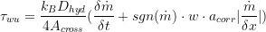
, where Brunone friction coefficient:
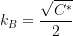
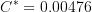
and for turbulent flow: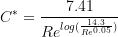
Note that Literature [7] was not found => There is not clear border between laminar and turbulent. Using only turbulent model gives better results to benchmarks due to its dependency to viscosity.
- Unsteady pressure drop:
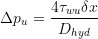
Heat Transfer
see Basics:ControlVolumes:FluidVolumes:VolumeVLE L4 Advanced
Vapour Cavity model
- Formation of cavities considered only at inlet and outlet of pipe:
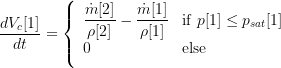
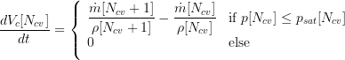
- From fist and the last cell, the cavity volume is substracted, if there is cavity formation in these cells.
Speed of Sound correction
- speed of sound in the fluid depending on the wall properties
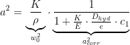
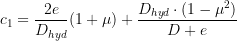
- Coupled into model equations using:
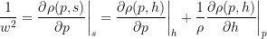
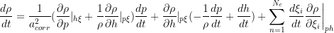
3. Limits of Validity
- accounting for possible formation of vapour cavity at inlet and outlet only
- stratified flow patterns or other strongly inhomogeneous flow regimes (like superheated ring flow) are not considered
- no chemical reactions considered
4. Interfaces
4.1 Physical Connectors
Interfaces:FluidPortIn inlet "inlet port"
Interfaces:FluidPortOut outlet "outlet ports"
Interfaces:HeatPort a heat
5. Nomenclature
a table referencing the nomenclature in the source code, the descriptions of variables and the "human-readable" , use the following latex table template and respect the overall textwidth of 150mm:
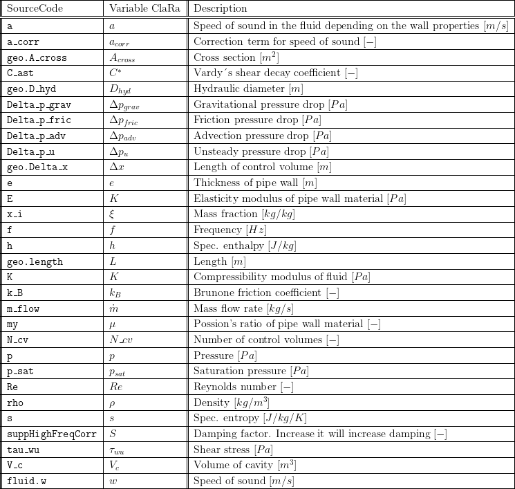
6. Governing Equations
6.1 System Description and General Modelling Approach
see Basics:ControlVolumes:FluidVolumes:VolumeVLE L4 Advanced
6.2 General Model Equations
Discretisation
see Basics:ControlVolumes:FluidVolumes:VolumeVLE L4 Advanced
Mass Conservation
see Basics:ControlVolumes:FluidVolumes:VolumeVLE L4 Advanced
Species Conservation
see Basics:ControlVolumes:FluidVolumes:VolumeVLE L4 Advanced
Energy Conservation
see Basics:ControlVolumes:FluidVolumes:VolumeVLE L4 Advanced
Momentum Conservation
see Basics:ControlVolumes:FluidVolumes:VolumeVLE L4 Advanced
Similarly, this model includes Dynamic Momentum Balance with suppression of numerical osciallations. Finite volume discretization tend to give numerical oscillations at low friction pressure losses (mass flows). The frequency of these oscillations scales with discretization.
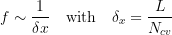
- obfuscation of “true physical” solution
- slow simulation time (solver takes small time steps)
The solution is to shift the real parts of oscillatory eigenvalues towards higher negative values, depending on the frequency.
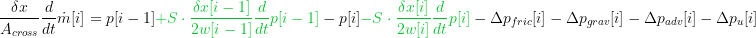
7. Remarks for Usage
- User shall primarly use this component for investigating water-hammer effects
- User shall primarly use L3 adjacent components in order to satisfy regular staggared disretization scheme.
- If connected to L1/L2 components this can lead to large non-linear systems. To improve it:
- disable frictionAtInlet/frictionAtInlet (this will remove pressure and mass flow states at connectors) when adjacent L1/L2 components has pressure drops at inlet/outlet
- use linear pressure drops at adjacent L1/L2 components (rather than quadratic)
- disable pressure suppression terms (this will remove pressure states at connectors)
- when connected to pressure sink with variable inlet pressure with abrupt (sudden) step change, use CombiTimeTable, otherwise Dymola cannot differentiate or crashes at step change
8. Validation
The model was validated against Kitagawa experiment [8].
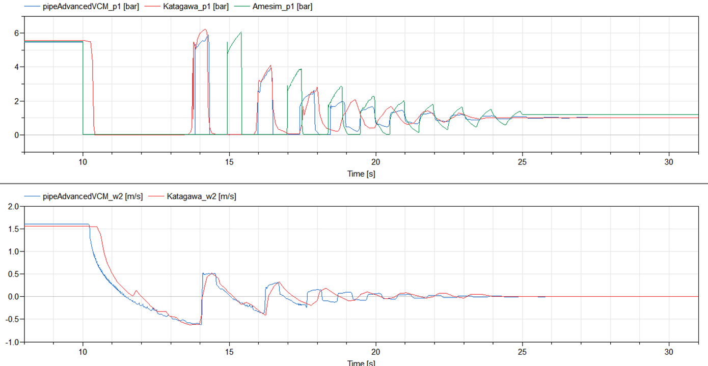
9. References
[1] Johannes Brunnemann and Friedrich Gottelt, Kai Wellner, Ala Renz, André Thüring, Volker Röder, Christoph Hasenbein, Christian Schulze, Gerhard Schmitz, Jörg Eiden: "Status of ClaRaCCS: Modelling and Simulation of Coal-Fired Power Plants with CO2 capture", 9th Modelica Conference, Munich, Germany, 2012
[2] Brunone, B., Golia, U. M. & Greco, M. 1991 Some remarks on the momentum equations for fast transients. In Hydraulic Transients with Column Separation (9th and Last Round Table of the IAHR Group). IAHR, Valencia, Spain, pp. 201–209.
[3] Zielke, W. 1968 Frequency-dependent friction in transient pipe flow. J. Basic Eng. 90 (1), 109–115. https://doi.org/10.1115/1.36050491
[4] Trikha, A. K. 1975 An efficient method for simulating frequency-dependent friction in transient liquid flow. J. Fluids Eng. 97, 97–105. https://doi.org/10.1115/1.3447224
[5] Kagawa, T., Lee, I., Kitagawa, A. & Takenaka, T. 1983 High speed and accurate computing method of frequency-dependent friction in laminar pipe flow for characteristic method. Trans. Jpn. Soc. Mech. Eng., Ser. A 49 (447), 2638–2644
[6] Bergant A., Simpson A.R., Vìtkovsk J. (2001) Developments in unsteady pipe flow friction modelling, Journal of Hydraulic Research, 39:3, 249-257, DOI: 10.1080/00221680109499828.
[7] Vardy, A.E., and Brown, J.M.B. (1996). On turbulent, unsteady, smooth-pipe flow. Proc, Int. Conf. on Pressure Surges and Fluid Transients, BHR Group, Harrogate, England, 289-311.
[8] Sanada K., Kitagawa A., Takenaka T. A study on analytical methods by classification of column separations in a water pipeline. Transactions of the Japan Society of Mechanical Engineers, Ser B 1990; 56(523); 585-593. In Japanese.
10. Authorship and Copyright Statement for original (initial) Contribution
Author:
ClaRa development team, Copyright 2017 - 2025.
Remarks:
This component was developed for ClaRa library.
Acknowledgements:
CLA:
The author(s) have agreed to ClaRa CLA, version 1.0. See https://claralib.com/pdf/CLA.pdf
By agreeing to ClaRa CLA, version 1.0 the author has granted the ClaRa development team a permanent right to use and modify his initial contribution as well as to publish it or its modified versions under the 3-clause BSD License.
11. Version History
- 2025 - ClaRaPlus 1.7.6 - initial implementation - A.Vojacek, J.Brunnemann, XRG Simulation GmbH
Backlinks: ClaRa:Components:VolumesValvesFittings:Pipes:PipeFlow L4 Advanced WH VCM